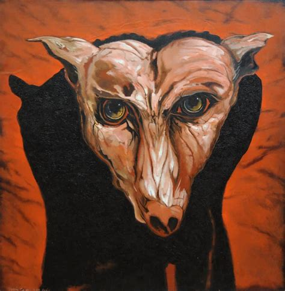

The Bacà is a diabolical creature that people conjure up to get wealth and property. It is also called upon to protect land and property from being stolen. It is thought that when a person all of a sudden gets prosperous they have conjured up a bacà.
The baca can take the form of a black cat, a dog, bull or other animals. Once conjured this shape-shifting creature becomes very demanding. It wants great sacrifices on the part of the person who uses him.  To get what you ask for from this creature it is like making a pact with the devil himself. In return for your gains he might be nice and just take some of your lands, homes, businesses or livestock. If you are one of the unlucky ones you might have to pay the ultimate price by having you, your friends or your family suffer from diseases, illnesses, bad things happening or the ultimate price, dying mysterious or by committing suicide. So before you decide you would give anything to become prosperous think long and hard before you call upon a baca. Do you really want to sell your soul to the devil for eternity just to have a short time of prosperity?